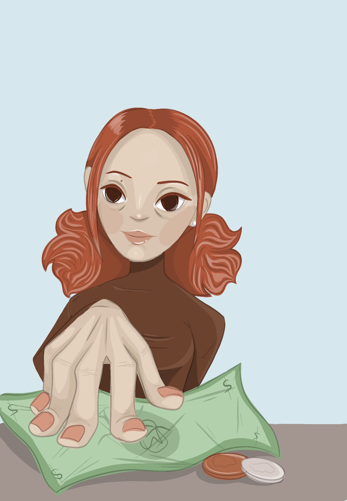

2D Artwork
Original Character: Peach Shopping
This artwork was created with Procreate. It is one of many pieces exploring different angles and positions for characters. The goal for this artwork is to explore skills with digital designs and begin to find inspiration for storylines.